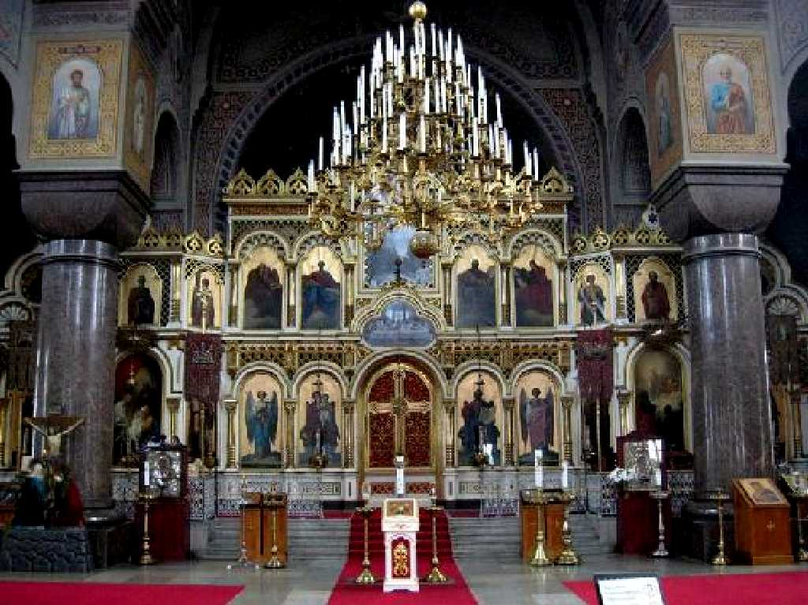
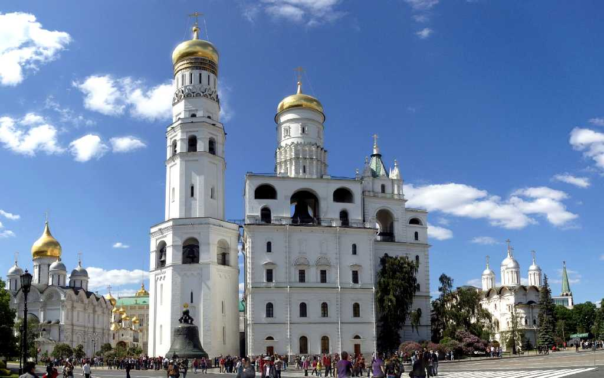
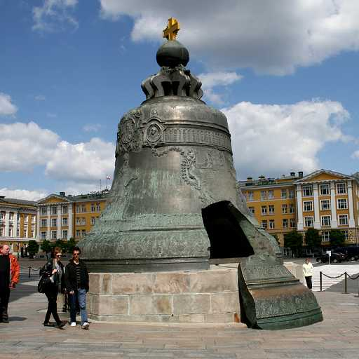
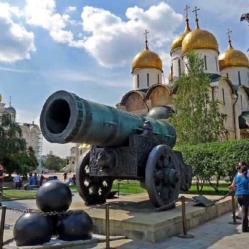
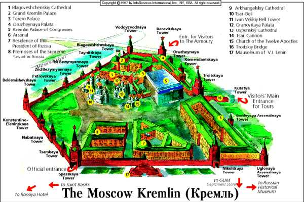
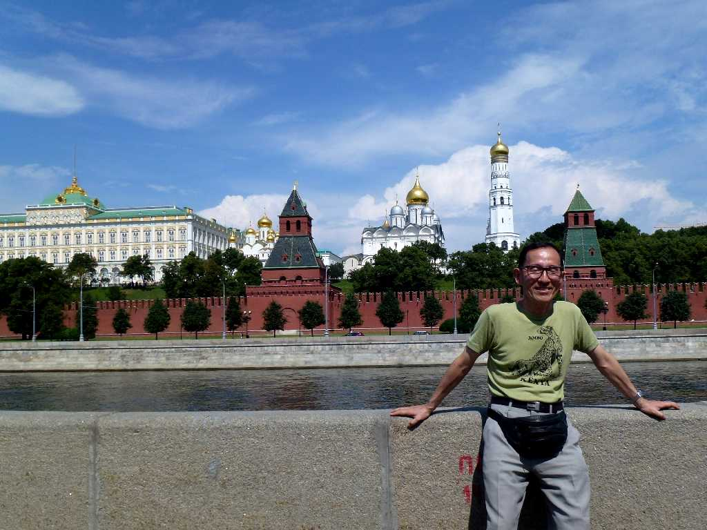
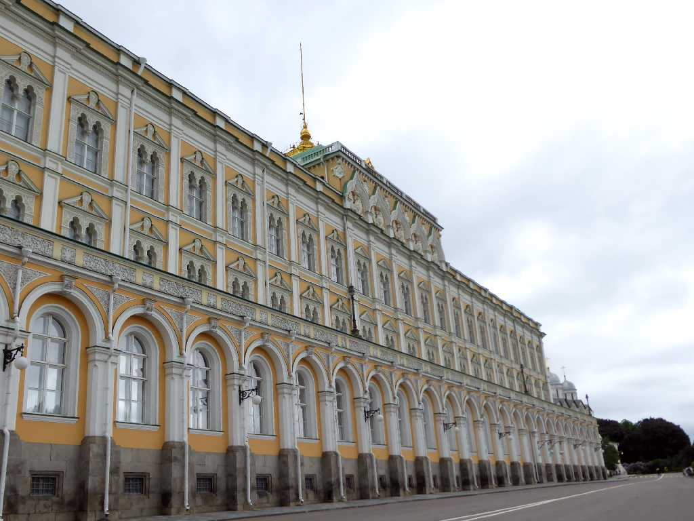
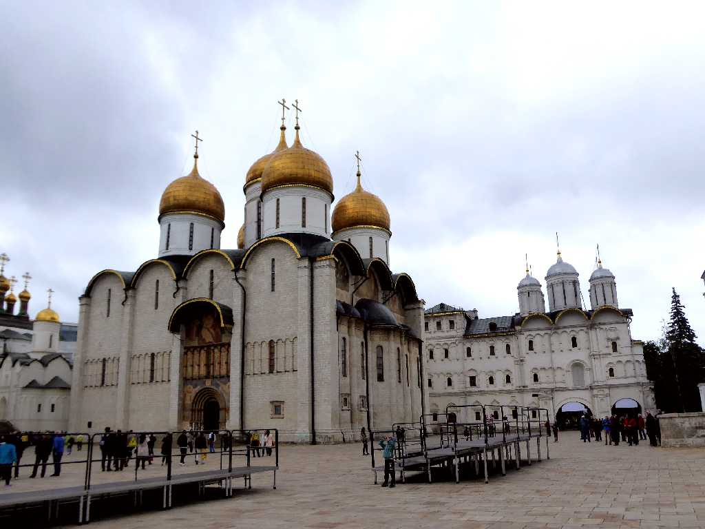
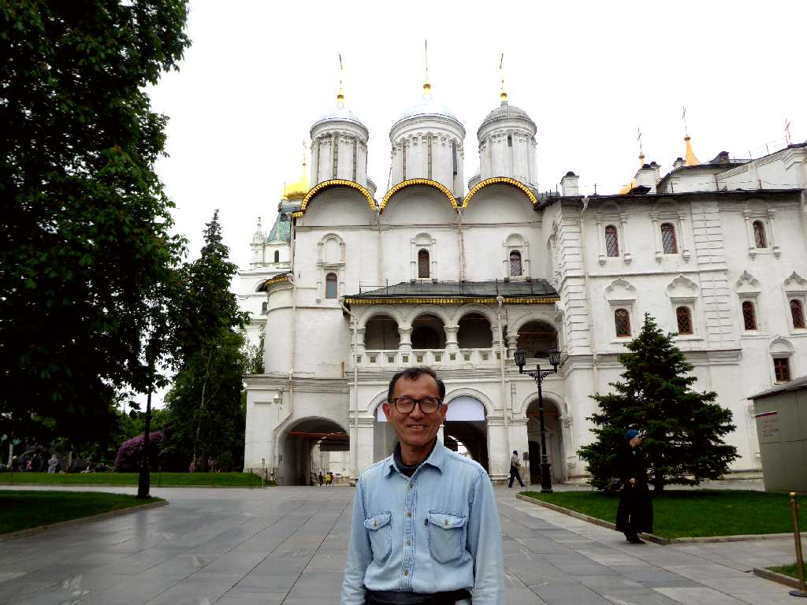

1479 Uspensky Cathedral Kremlin
１４７９年に再建された生神女就寝大聖堂は帝政時代の皇帝の戴冠式がおこなわれ今では大統領就任式でロシア正教の祝福を受ける場所となっている

Altar Uspensky Cathedral

1508 Bell Tower
１５０８年に創られた高さ８１ｍあるイワン大帝の鐘楼
 
Bell Cannon
皇帝の鐘 高さ６.1ｍ直径６.6ｍ重量２００ｔ 皇帝の大砲 長さ５.3ｍ口径８９ｃｍ重量４０ｔ

Kremlin

July 7 2013 Kremlin

Grand Kremlin Palace Kremlin Moscow
８０日間世界一周鉄道の旅で訪問以来４年ぶりの再訪問

Uspensky Cathedral Kremlin

June 16 2017 Kremlin